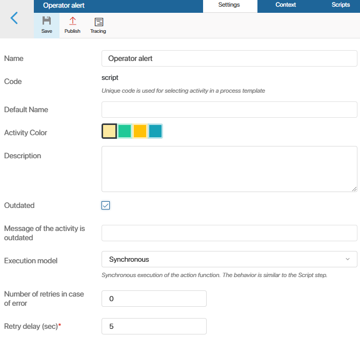
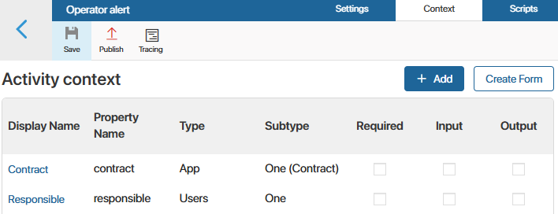
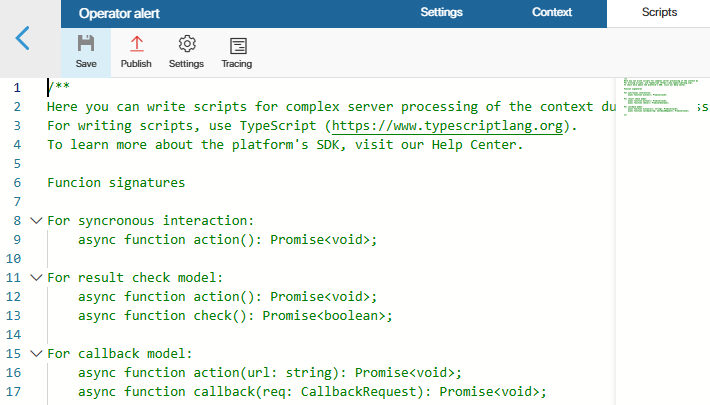

This type of business process activity can be used to create integrations, for example, to send requests to an external system. Business process activity settings break into three tabs: Settings, Context, and Scripts.
Settings tab
On the Settings tab, specify:

- Name. Name of the business process activity.
- Default name. This name is displayed on the business process activity element when it is added to the business process diagram.
- Activity color. The color of the business process activity shape on the process diagram.
- Description. The description of the business process activity’s functionality and features.
- Outdated. This option allows you to hide the element from the business process designer so that users cannot add it to the diagrams of new processes. Outdated actions will continue to work unchanged in already created processes. For example, you can enable the option for an activity after a module update.
- Message if the activity is outdated. Text of the alert informing that a process includes outdated activities. This message is shown when a user publishes a process with outdated activities.
- Execution model. Specify the way the activity is performed:
- Synchronous. Simple execution of a script specified in the activity, i. e. synchronous execution of the
action()function. An action with synchronous execution can be called as a function from other scripts. For more details, see the Call activity in scripts section of the article. - Result Request.The system executes the specified script and sends a status request to an external service. To implement this approach in a business process activity, you need to define the
check()function that checks the result. The business process will continue after thecheck()function returnstrue(). - Callback.In a request to an external service, a URL that the result needs to be returned to is passed. This means that this URL is passed as the call parameter, and this URL will be called when the external service completes the task. Results of the call will be sent to this URL. The response URL is provided as an input argument to the
action()function. Any request for this URL is passed to thecallback()function. After that, the process continues
- Number of retries in case of error. Specifies how many times the system will try to execute the activity.
- Retry delay (sec)*. Defines the frequency of attempts.
Context tab
On the Context tab, you can add variables to use in the business process activity. To create a new context variable, click +Add. Read more about variable types in the System data types article.

Context variables of an activity can be passed to the business process this activity is added to. An activity, in turn, can get the values of the variables from the business process context.
To pass variables, you must define which variables are input and output ones. Once you have added the activity to the process diagram, you can map these variables to the process context. Read more about this in the Binding and other aspects of business process activities article.
Scripts tab
On the Scripts tab, you can create a business process activity script. Scripts are written in the TypeScript programming language. If you want to know more about the basic principles of script-writing in BRIX, please visit BRIX TypeScript SDK.
By default, in an activity script, you can only access properties, processes, and API methods from the module where the activity is configured. You can grant access to other system objects in the script using Global constants. To do this, click Settings in the menu at the top of the page.

You can use the following options:
- Global constants. Check the Global option to be able to refer to objects from all workspaces in the system and to global parameters. For this purpose, the Global constant is used.
начало внимание
When the Global constant is used in a script, the module with this activity cannot be exported.
конец внимание
- Optional dependencies (available in the Imports object). Select workspaces or custom modules to add optional dependencies to them. They can then be accessed via the Imports constant. When using optional dependencies, the module can be exported without restrictions.
To create a dependency, click +Add workspace and select a system component. Then, in the Alias column, give it a unique name to be used in the script. Latin letters and numbers are acceptable, and you can use an underscore to separate words. By default, the workspace code or module ID is used.
After entering the activity details, click Save and Publish in the top pane of the settings window.
With the module enabled, the activity will be available in the business process designer, on the toolbar to the right of the modeling field, on the Integrations tab. You can add the graphical element on the process flow chart and configure the settings for its execution.
Trace activity scripts
When an activity is published, you can collect information about the execution of its script. This helps you evaluate the duration of individual requests, optimize the code, and identify the causes of errors.
To do this, enable tracing by activity in Administration > Developer Tools. After that, you will be able to view the collected data by selecting the Tracing option in the activity settings.
Read more about enabling tracing and trace information in the Trace server scripts article.
Call activity in scripts
In business processes, custom function libraries can be created within modules through the use of actions. Unlike API methods, actions specify input and output variables with defined types. This helps to clearly understand what types of data need to be passed when calling an action and what the result of its execution will be.
Activities of the type Script with the Synchronous model can only be called in scripts.
An activity can be used:
- Within the module where it is configured: in scenarios of other actions, API methods, business processes, and event handlers.
- In scripts of other system components that have an optional dependency on the module with this action.
To call the activity, the action property is used; it is available if an appropriate activity is published in the module. The method call() is used to call it, and an object with the activity’s input variables is passed as a parameter.
When accessing the action property and the activity, the ?. operator is used, optional chaining operator. This is necessary to handle the scenario correctly in case the action is deleted from the module.
Note that if an input variable of the activity is mandatory and has a default value, it becomes optional in the input structure of the call() method. Regardless of the mandatory nature of the output variable, it also becomes optional in the output structure of the method.
As an example, consider an action that retrieves exchange rates from the Central Bank. The action has input variable: currency code (type String) and current date (type Date). The output variable is the exchange rate (type Number).
In module scripts, the action can be called as follows:
// Create an object for passing activity execution parameters — the currency code and current date
let input: {
currency_code: TString;
date: TDate;
};
// Create an object that will store the result of the activity — currency code
let output: {
currency_rate?: TFloat;
}
// Write currency code from the context, and the current date, in order to pass the date to the input variables of the activity
input = {
currency_code: Context.data.currency_code,
date: new TDate(),
};
// Call the activity for getting the exchange rate set inside the module
output = await Namespace.action?.get_currency_rate?.call(input);
// Check if the result is received
if (output) {
// Get data from the object that stores the result
Context.data.current_currency_rate = output.currency_rate;
}
An activity can also be called from a script of a component that is not part of the module. For example, from a widget that belongs to a workspace or from an event handler of another module. To do this, in the component’s script settings,set an optional dependency from the module with this activity. After this, the activity can be accessed using the Imports constant. For more details, see Optional dependencies.
Suppose in a business process script in a workspace, you set up an optional dependency from the module in which the activity to retrieve exchange rates is configured. In the dependency settings of the module, a unique name currency_module is set. The activity can be called from the process script in the following way:
// Call `get_currency` activity set up in the module
// Pass the currency code and current date to the activity input variable
const output = await Imports?.currency_module?.action?.get_currency_rate?.call({
currency_code: Context.data.currency_code,
date: new TDate(),
});
// Chech that the result of the activity is received
if (output) {
// Write the exchange rate obtained with the module to the process context variable
Context.data.current_currency_rate = output.currency_rate;
}
Found a typo? Select it and press Ctrl+Enter to send us feedback